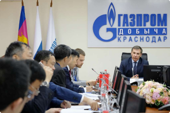
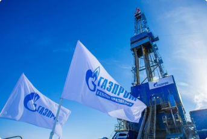
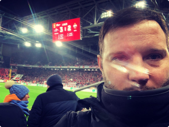

Хавьер Гарсия - известный профессиональный испанский футболист играющий за российскую команду “Зенит”
 Добавлено 44 минуты назад
Добавлено 44 минуты назад
СПЕЦИАЛЬНЫЙ ОТЧЕТ:
Инвестиция Хавьера Гарсии поразила экспертов и вызвала опасения у крупных банков
2,174 просмотр
64 комментария
В наше непростое время прямо сейчас тысячи граждан России участвуют в одном из самых ярких инвестиционных безумств последних лет. Многие пытаются “попасть на вечеринку” после того, как Хавьер Гарсия рассказал на интервью в телепередаче “Россия 24”, что он недавно заработал 2 600 000 ₽ всего за 3 месяца!
Хави только что нарушил первое правило бизнеса: никогда не раскрывайте секреты своего инвестиционного портфеля, а всё из-за того, что рассказал зрителям, как именно потенциально получить невероятную прибыль во время карантина!
Он только что получил сумму, эквивалентную его полугодой годовой зарплате, в результате своих последних инвестиций. Теперь вы можете узнать, как ему это удалось!
На прошлой неделе во время интервью для канала “Россия24” Хавьера спросил интервьюер, почему он выглядит таким счастливым и радостным. В ответ на что он ответил:
— “Честно говоря, я просто заработал внушительную сумму денег от очень успешных инвестиций в программу автоматической торговли газом от всем известного Газпрома , и я до сих пор очень удивлен её успехом!”
Ошеломляющая неопределенность фондового рынка, заставляющая людей искать безопасную альтернативу ненадежным деньгам и акциям во время карантина, заставила сотрудников газпрома задуматься о создании чего-то совершенно нового, нового экономического рывка в котором может участвовать каждый житель страны

Цены на золото росли, но оно не так ценно, как инвестиции в газ. Эксперты предполагают, что, возможно, торги газом - это золото 2021 года, потому что, когда экономика сильна, цена на газ растёт, но когда экономика рушится, то его стоимость остается прежней, хотя во многих случаях всё равно увеличивается
По итогу Хавьер не назвал сумму своих инвестиций, но просочившиеся доверенные источники дали оценку, что он заработал около 2 600 000 рублей всего за три месяца!
Также Хави добавил в своем интервью, что, по его мнению, каждый в России может извлечь выгоду из потрясающих возможностей инвестирования в Газпром
ИНТЕРВЬЮ
Ведущий программы Россия24, Сергей Брилёв, спросил Хави о мотивации, успешной карьере и его инвестиционных предприятиях. Во время интервью футболист сказал:
— “Источником моей мотивации является то, что я стараюсь изо всех сил в том, во что я верю, и прямо сейчас мой источник дохода номер один - это новая программа торговли газом от известной компании Газпром
Это самая большая возможность, которую я видел за последние годы. Это безумие! Что поразительно, так это то, насколько это было легко. Серьезно, любой мог бы получить неплохую прибыль на этой платформе, если бы захотел”
Сергею Брилёву стало любопытно, и он спросил, как он узнал об этой возможности. Хави ответил:
— “Мне позвонил один из моих друзей детства, с которым я часто советуюсь. В его голосе я слышал волнение, и мой друг сказал мне, что недавно заработал 320 000 рублей менее чем за неделю с помощью новой программы торговли газом
Я спросил его, насколько сложно управлять этой платформой, и оказалось, что это так же просто, как пожарить яйцо”
В этот момент Хави Гарсия достал свой телефон и показал Сергею, сколько денег он заработал только на этой неделе. У Сергея Брилёва отвисла челюсть. Хотя неизвестно, сколько сделал Хави на той неделе, по оценкам, он в целом заработал более 2 600 000 рублей за несколько месяцев. Даже для такого богатого человека, как Хавьер, это невероятно!
— “В условиях коллапса нашей экономики, фондового рынка и банковской системы, вызванного кризисом Covid-19, мне нужно было рискнуть и инвестировать во что-то, что не регулируется коррумпированными политиками, я бы предпочел атомистический рынок, и торги газом от Газпрома - это именно то, что вам нужно”
Идея торгов от Газпрома проста: позволить среднему человеку заработать на рынке газа с одним существенным преимуществом - вы используете сложную автоматизированную систему, которая делает всю работу за вас
Дело в том, что даже самый умный человек в мире даже отдаленно не похож на интеллект машины. Их сложные вычисления могут точно предсказать изменения на рынке, поэтому вы в большинстве случаев выигрываете при каждой автоматической сделке. Это не волшебство. Это просто хорошая математика
В чем уникальность торгов от Газпрома?

Люди склонны вкладывать средства во что угодно: казино, криптовалюты, бизнес и т.д. и всё это ради получения прибыли. Создатели платформы торгов от Газпрома поняли это и захотели вырваться из толпы всех госудаственных компаний
В декабре 2020 года Государственная дума Российской Федерации обязала Газпром создать проект, в рамках которого граждане страны смогут использовать национальные ресурсы при поддержке компании с целью обеспечения качественного уровня жизни. Новый проект уже реализован и показывает успешные результаты
Председатель правления совета директоров ПАО “Газпром” Алексей Миллер дал комментарий нашему журналисту:
“Мы приняли решение открыть доступ к торгам для всех граждан страны, поскольку это будет выгодно как для Газпрома, так и для россиян. Ресурсы − достояние каждого!
Дело в том, что на данный момент российский газ становится самым востребованным на мировом рынке. Во всех странах мира стремительно растет спрос на его покупку. По этой причине мы решили увеличить объемы производства газа в 4 раза и привлечь людей со всей России в качестве инвесторов
Поскольку цены на газ сейчас быстро меняются, все, кто участвуют в проектах Газпрома, получают в среднем по $800-$8,500 дохода ежемесячно”
Хави Гарсия добавил одно последнее предложение перед тем, как сменить тему, сказав:
— “Послушайте, сейчас тяжелые времена для многих людей, когда экономика рушится после каратнтина. Я потерял огромные суммы денег во многих других вложениях. Торги в Газпроме стали для меня чудом. Это лучший финансовый инструмент, который поможет народу России взять свои с трудом заработанные деньги и вложить их, чтобы улучшить свою жизнь
Крупные банки и правительство так много получают от ваших убытков, и они никогда не признают, что что-то вроде партнёрской программы от Газпрома вообще существуют, и не порекомендуют вам его использовать. Имейте в виду, что они хотят, чтобы вы проиграли, чтобы заработать больше денег. Этот урок обошелся мне слишком дорого, не повторяйте моих ошибок и доверяйте крупным банкам”
Действительно ли работают торги Газпрома?
Наши модераторы не позволили бы нам публиковать что-либо, не проверив достоверность истории. Это означает, что мы должны убедиться, что торги газом от Газпрома − это законная возможность для заработка из дома
Это звучит слишком хорошо, чтобы быть правдой, поэтому есть только один способ получить ответ, который мы все хотели бы знать
Наша группа протестировала эту платформу, чтобы убедиться, что она работает так, как описал Хави Гарсия. Один из наших журналистов, Андрей Захаров, вызвался рискнуть своими деньгами и протестировать Газпром и вот что из этого вышло
Наш журналист Андрей, 35-летний отец двух красивых девушек, признает, что испытывает финансовые трудности после того, как его жена потеряла работу в прошлом году из-за COVID-19, а на кону была свадьба. Он сказал нашей команде, что здесь он идет на рассчитанный риск, чтобы обеспечить свою семью. Он был довольно оптимистичен в отношении Газпрома. Чем больше он читал об этом, тем больше убеждался, что это сработает, поэтому он попробовал
— “Сначала, когда я услышал интервью с Хави, я подумал, что это не может быть правдой. Зарабатывать деньги в таком диапазоне прибыли почти невозможно. Моя работа как журналиста − докопаться до сути. Сможет ли Газпром оправдать ажиотаж?
Я решил попробовать торги, из-за моего финансового положения и конечно же ради хорошей журналистики
Посмотрел вступительное видео о платформе, а затем зарегистрировался. Видео получилось коротким и простым. Через несколько часов мне позвонил мой личный инвестиционный менеджер. Он ответил на все мои вопросы, и так как я являюсь журналистом-расследователем, то вы можете себе представить, сколько вопросов я ему задавал
Он почувствовал мой скептицизм, поэтому даже пообещал, что, если я проиграю хотя бы одну копейку, он лично вернет мой депозит в размере 12000 рублей со своих денег. Вот насколько он был уверен в их системе. Теперь это обслуживание клиентов, превосходящее все, что я видел, и неудивительно, что банки напуганы”
Газпром торги - это платформа для автоматической торговли объемами газа. Программное обеспечение использует передовые алгоритмы искусственного интеллекта и машинное обучение, чтобы точно предсказать, когда стоимость газа будет расти и падать. Рассчитать такое даже лучший математик не смог бы. Такая система будет самостоятельно торговать газом
— “Чем больше людей используют систему, тем лучше она может прогнозировать рынок и выигрывать больше торговых обменов, поэтому уравнение достаточно простое − больше пользователей = больше денег”
— “Узнав, как работает система, я понял, почему успешные бизнесмены и знаменитости, такие как Хави Гарсия, решили «раскрыть свои секреты» открыто. Это действительно модель WIN-WIN”
Точно также, как и Хави Гарсия, наш Андрей любит футбол и увлекается им, поэтому он уделил особое внимание проверке слов одного из своих кумиров

— “В течение 1 часа после внесения 12000 рублей программное обеспечение начало торговать для меня. Честно говоря, я нервничал, позволяя программе “играть” с моими деньгами. Сначала я очень переживал, но когда связался с менеджером платформы − всё стало понятно и сомнений больше не возникало!
Моя первая инвестиция была не очень внушительной, но даже так я смог убедиться в прибыльности и эффективности платформы. Все-таки когда технология разработана такой большой корпорацией как Газпром, все продумано и реализовано так, как нужно. На работу в проекте я выделяю примерно час день, а все остальное время принадлежит мне
Я инвестировал немного,но за прошлый месяц получилось заработать 370,000 рублей! Этот доход в разы больше зарплаты, поэтому я уже думал на тем, чтобы уволиться с работы и планирую вложить в Газпром-платформу ещё больше”
Приходилось иметь в виду, что алгоритм верен примерно в 81-92% расчетов. Вы не выиграете каждую сделку, но вы выиграете БОЛЬШЕ
— “Итак, я позволил программе продолжать торговать за меня и внимательно за ней наблюдал. Первая сделка была прибыльной! Это было 2506 рублей чистыми, что не так уж и много, но при этом я вообще не участвовал в процессе. Затем следующая сделка принесла прибыль в 5170 рублей”
— “Сумма следующих пяти сделок составила 14827 рублей . Это заняло всего 5 минут! Это была чистая удача? Чем больше сделок совершала система, тем больше я не верил своим глазам. Каждый раз, когда я обновлял экран, моя прибыль росла все выше и выше. Я довольно скептически настроен как человек, особенно из-за моего исследовательского опыта, но что я могу сказать? РАБОТАЕТ КАК ЧАСЫ! К концу дня я заработал более 27800 рублей прибыли, что неплохо с начальных вложений в 12000 рублей! Ребята в офисе будут так завидовать”
— “В итоге я заработал в общей сумме 672 000 рублей. Решил снять 230 000 , а остаток − реинвестировать. В течение двух дней я получил подтверждение на вывод. Странно видеть как цифровые, почти воображаемые деньги превращаются в наличку в банке. Это особенно верно, если учесть тот факт, что я заработал намного больше своей зарплаты и начал с 12 000 рублей”
Излишне говорить, что к этому моменту все мои коллеги присоединились к торгам, увидев мой успех
Исходя из расследований Андрея как журналиста, о платформе можно сказать лишь одно: она действительно работает!
Как работает Газпром-платформа?
Для начала вам понадобится компьютер, смартфон или планшет с доступом в Интернет. Вам не нужны какие-то особые навыки, вы не брокер, а инвестор. Вам не нужен технический или криптовалютный опыт, потому что программное обеспечение и ваш личный инвестиционный менеджер сделают всю работу за вас
Основная функция платформы − обогащение граждан с помощью национальных ресурсов. Компания Газпром сделала все возможное для идеальной работы своего нового проекта. С технической стороны платформу усиливает современный алгоритм, который подбирает лучшие сделки для торговли газом и нефтью в диапазоне выбранных пользователем сумм
Мощности алгоритма расположены в центральном дата-центре Газпрома, а надежность платформы обеспечена защитой государственного уровня. При этом компания Газпром оставила участником право на анонимность, ведь налог с дохода уже включен в платформу, а пользователь получает чистую прибыль. Размеры и частота выплаты дивидендов напрямую зависят от объемов начальных вложений участника
Единственным минусом платформы является количество доступных мест для участия, но на данный момент Газпром открыл набор на «Северный Поток-2», магистраль которой в скором времени начнет свою работу и сможет обогатить своих первых участников
Преимущества уникальной разработки Газпром:
Как присоединиться к платформе?
Газпром-платформа открывает свои двери для всех жителей России. Стать ее участником может абсолютно каждый, кто подаст заявку на сайте. Зарабатывать с Газпром на торговле газом и нефтью смогут только те, кто успеет зарегистрироваться до завершения набора. Напоминаем, что прямо сейчас открыт набор на «Северный Поток-2»
Андрей Захаров подвёл итоги своего рассказа:
— “Я рад, что начал работать с компанией Газпром и вложилcя в торговлю газом и нефтью. Теперь я могу уволиться с работы и не думать о том, что будет завтра, послезавтра или через неделю. Теперь я точно уверен в своем будущем, и это благодаря Газпром-платформе, которая уже в первый месяц работы принесла мне значительную прибыль”
Чтобы стать участником Газпром-платформы, необходимо выполнить всего несколько шагов:
-
Сайт Газпрома
Перейдите по этой ссылке на официальный сайт платформы от Газпром
-
Регистрация
Зарегистрируйтесь на сайте, внимательно и правильно заполнив все поля формы
-
Звонок от менеджера
Дождитесь звонка от менеджера платформы на ваш мобильный номер телефона и подтвердите регистрацию
-
Заберите прибыль
Выберите желаемую сумму и получите первую выплату уже к вечеру этого дня
Не забывайте, что количество мест для участников платформы ограничено. Сейчас Газпром открыл набор на “Северный Поток-2”, который уже начал приносить доход. На данный момент доступно 65 свободных мест. Будьте в числе первых, чтобы начать менять свою жизнь уже сегодня, как это сделал Андрей Захаров. Реальная выгода от национальных ресурсов поможет и вам получить хороший доход в этом году
Автор статьи:
Сергей Куницкий
2,174 просмотр
64 комментария
64 комментария
Аркадий Литвин, г. Пермь
@arlitvin_73
Не понимаю, почему люди не могут просто взять и заработать. Прочесть эту статью занимает две минуты, а пользы больше, чем от всех книг по увеличению заработка вместе взятых!
Алевтина Гришина, г. Москва
@gralevtina068
А я всегда верила, что путин о нас заботится! Вот и дождалась, когда государство само заботится о людях и помогает им. Спасибо всем, кто хоть как-то инициировал создание такой платформы!
Виталий Москаленко, г. Тула
@moskalenkoonline_21
На заработанные деньги купил себе и жене машину. Приятно, когда есть вот такая лазейка, которая позволяет не тратя время, зарабатывать тысячи в месяц. Планирую сделать ремонт дома, и съездить в Египет этим летом
Анна Багрицкая, г. Белгород
@bagritskaya_1982
Не понимаю, почему у меня не открывается официальный сайт. Ничего же особенного в моем компьютере вроде бы нет, а сайт глючит и глючит(9
Кристина Кукина, г. Казань
@kkgirl331
А я открыла собственную кондитерскую на заработанные деньги, ведь доход доходом, а дело жизни иметь надо!
Юрий Подопригора, г. Тула
@podoprigoraura
Хочу купить себе загородный дом в подмосковье. Мечтать не вредно же. Да и кроме того, теперь, с такой-то платформой. Заработок небось будет ого-го
Ольга Демчинская, г. Орёл
@user210493
А кто работать будет, раз все такими умниками будут? Или вам хлеб испекут роботы? И лечить вас тоже будут роботы? Высмеивают честный труд человека, как будто это не он сделал из обезъяны человека разумного. Сами ничего не могут, потому и создают всякие пустышки, а вы, идиоты, ведетесь на это. Лучше бы работать пошли, честное слово.
Ян Канаев, г. Петрозаводск
@kanaev_kk1
Не орите тут, женщина. Мы все прекрасно понимаем и никто вас не принуждает так зарабатывать. Пеките себе хлеб на здоровье и к нам не суйтесь.
Доступ заблокирован
Для доступа ко всем комментариям, возможности писать и отвечать, вам необходимо быть зарегистрированным пользователем